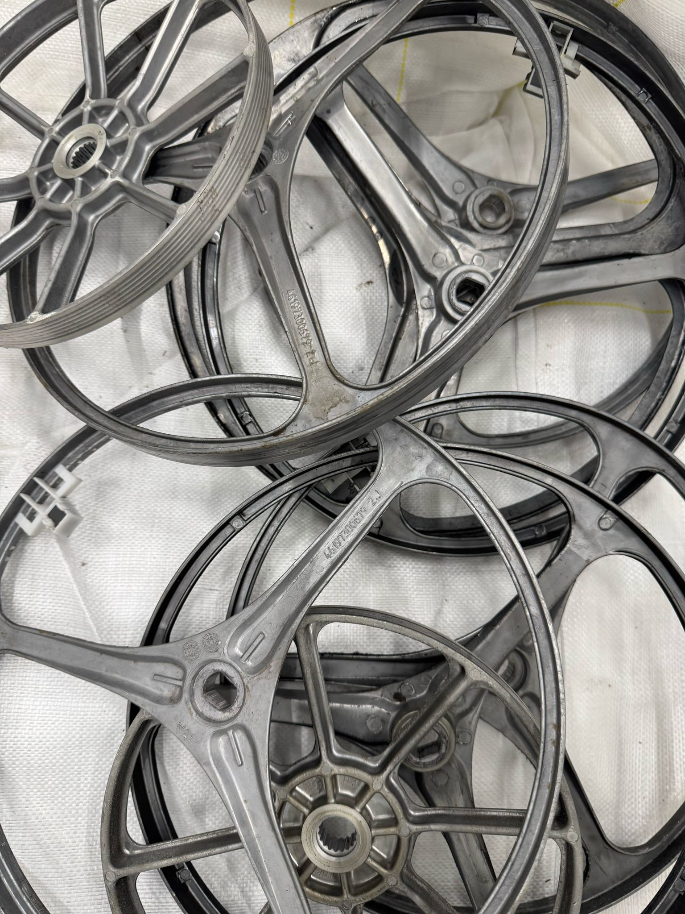

|

|

|

|
|
塑膠
經粉碎與熔化處理後可製成新塑膠原料，並能重新製造為新塑膠產品。 與生產原生塑膠相比，使用再生塑膠可節省超過80%的能源消耗。 玻璃
與原生玻璃相比，使用再生玻璃可節省10-30%的能源消耗。 |
鐵
與生產原生鐵相比，使用再生鐵可節省74%的能源消耗。 |
鋁
與生產原生鋁相比，使用再生鋁可節省95%的能源消耗。 |
銅
與生產原生銅相比，使用再生銅可節省85%的能源消耗。 |
.png) 四電一腦 智碳平台
四電一腦 智碳平台E-waste Smart Carbon Platform EN / 中